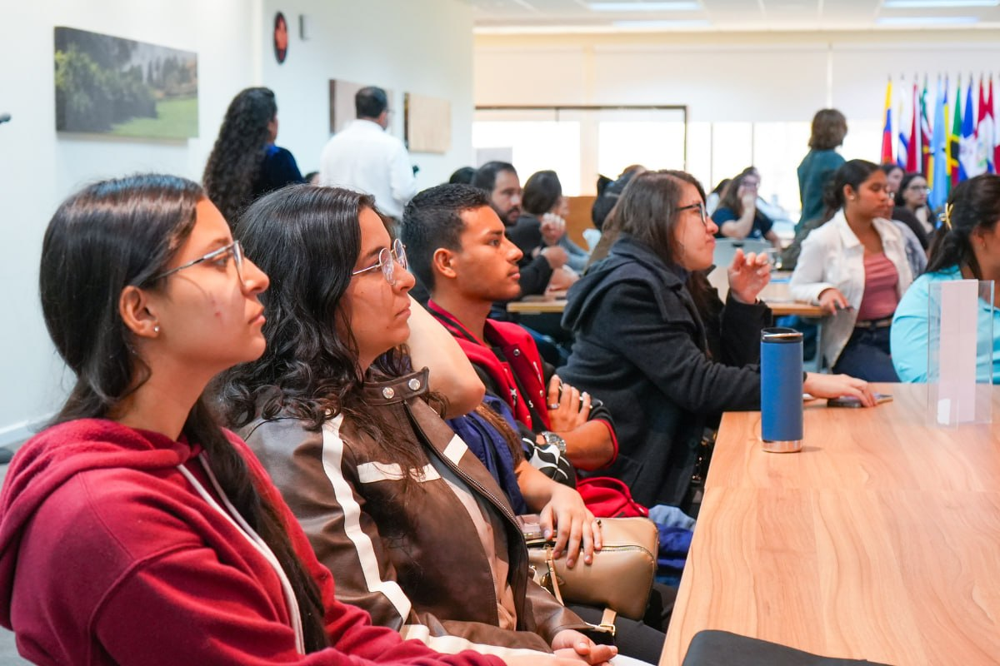
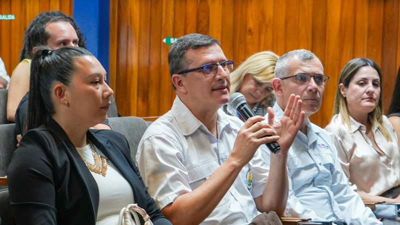
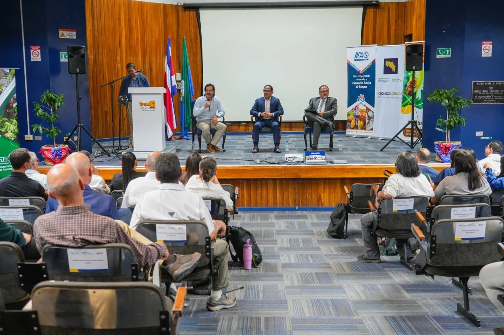

AGRI Lab 506 : Innovación, liderazgo y emprendimiento para las juventudes del agro.
Una iniciativa del MAG, INA e IICA para impulsar una nueva generación de jóvenes capaces de transformar el agro costarricense mediante innovación, tecnología y acción.
AGRI-TALK: Jóvenes inspirando jóvenes
Fecha: Lunes 17 de Agosto | Meta: +100 participantes conectados
AGRI-Talk es el punto de partida de AGRI Lab 506. Un espacio de diálogos directos, conexión de comunidad y presentación de casos reales de éxito e innovación tecnológica en el campo.
- Diálogos directos: Intercambio sin filtros con líderes del nuevo agro.
- Casos de éxito e innovación: Tecnologías aplicadas en fincas reales.
- Creación de comunidad: La red de jóvenes que impulsarán las soluciones del futuro.
Inspirar • Formar • Emprender • Solucionar
"Conocimiento que se comparte, talento que se desarrolla, soluciones que transforman."
¿Qué es AGRI Lab 506?
Costa Rica enfrenta un importante desafío generacional en el sector agropecuario. La edad promedio de los productores supera los 60 años y cada vez menos jóvenes visualizan el agro como una opción para desarrollarse profesionalmente, emprender o generar oportunidades en sus comunidades.
Al mismo tiempo, el sector requiere nuevas capacidades para afrontar retos relacionados con la productividad, la innovación, la sostenibilidad, el uso de tecnologías digitales y la adaptación al cambio climático.
AGRI Lab 506 surge como una respuesta a este desafío. Es una plataforma de formación, innovación y articulación impulsada por el Ministerio de Agricultura y Ganadería (MAG), el Instituto Nacional de Aprendizaje (INA) y el Instituto Interamericano de Cooperación para la Agricultura (IICA), orientada a fortalecer las capacidades de las juventudes rurales y agroalimentarias mediante experiencias prácticas, aprendizaje aplicado y conexión con el ecosistema de innovación del país.
Más que un programa de capacitación, AGRI Lab 506 busca crear una comunidad de jóvenes capaces de identificar oportunidades, desarrollar soluciones, impulsar emprendimientos y convertirse en agentes de transformación en sus territorios.
Conoce más sobre la experiencia AGRI Lab 506
¿Qué ofrece la plataforma?
Inspiración y liderazgo
Espacios para conocer experiencias exitosas, tendencias, tecnologías emergentes y oportunidades para las nuevas generaciones del agro.
Innovación y soluciones
Metodologías prácticas para identificar retos del sector y diseñar soluciones con impacto en la productividad, sostenibilidad y competitividad.
Emprendimiento y oportunidades
Herramientas para fortalecer ideas, desarrollar proyectos y conectar con oportunidades de crecimiento dentro del ecosistema agroalimentario.
Articulación y redes
Vinculación con instituciones, organizaciones, empresas, centros de conocimiento y actores que apoyan iniciativas lideradas por jóvenes.
La Ruta de Innovación AGRI Lab 506
Un proceso continuo de cuatro etapas para pasar de la idea a la acción territorial
1. INSPIRAR (AGRI-Talk)
Diálogos directos entre jóvenes, exposición de casos de éxito agrotecnológicos y articulación de los primeros lazos de la comunidad.
2. FORMAR (ECAs-t)
Escuelas de campo tecnológicas en fincas. Formación de extensionistas y multiplicadores territoriales para llevar la tecnología al terreno.
3. EMPRENDER
Acompañamiento en modelos de negocio, co-creación, mentorías especializadas y vinculación con aliados para financiamiento.
4. SOLUCIONAR
Prototipado, validación de tecnologías e implementación acelerada para resolver desafíos específicos de las regiones productivas.
¿Quiénes pueden participar?
AGRI Lab 506 está dirigido a jóvenes entre los 15 y 35 años de todo Costa Rica que tengan interés en el sector agropecuario y agroalimentario.
Pueden participar estudiantes, productores, emprendedores, extensionistas, educadores, integrantes de organizaciones rurales y cualquier persona joven interesada en contribuir al futuro del agro costarricense.
- Ruta 1 — Extensionistas y Técnicos: Fortalecimiento de capacidades digitales, liderazgo y extensión moderna para convertirse en formadores multiplicadores.
- Ruta 2 — Jóvenes Productores y Emprendedores: Adopción tecnológica, diseño de soluciones a la medida e impulso a modelos de negocio rurales.
El futuro del agro necesita nuevas ideas, nuevos liderazgos y nuevas soluciones. AGRI-Lab es un espacio para aprender, innovar, emprender y construir ese futuro juntos
— Equipo AGRI Lab 506Hitos y Próximas Actividades
Acompaña la evolución del programa desde el evento de apertura hasta la implementación territorial
| Cronograma | Hito / Actividad | Meta de Impacto | Acción |
|---|---|---|---|
| Lunes 17 Agosto |
AGRI-TALK (Evento de Apertura)
Conversatorio e intercambio virtual con jóvenes líderes de la innovación agrotecnológica regional. |
+100 Personas capacitadas e inspiradas | |
| 4ta sem. Agosto |
Formador de Formadores (ECAs-t)
Talleres e inmersión técnica para técnicos y extensionistas en escuelas de campo tecnológicas. |
+30 Técnicos multiplicadores territoriales | Fase de Selección |
| 3ra sem. Setiembre |
ECA's-t Jóvenes formando Jóvenes
Despliegue masivo de transferencia de conocimiento e incubación de proyectos en territorios. |
+300 Jóvenes impulsando innovación | Pronto a abrir |
| Finales Noviembre |
Escalamiento y Soluciones Finales
Prototipado, validación y presentación de soluciones concretas para el sector agroalimentario. |
+5 Iniciativas con potencial de implementación | Cierre de ciclo |
Noticias y Novedades
Mantente al día con los avances e historias del AGRI Lab 506

18 Ago 2026Jóvenes impulsan nueva visión del agro costarricense desde la innovación ...
“No se trata solamente de poner una semilla en la tierra. Necesitamos tecnología y conocimiento para entender qué está pasando, anticipar problemas, utilizar ...
Leer noticia completa
2 Ago 2026Lanzan AGRI-Lab para impulsar el talento joven y la innovación en el agro
El Ministerio de Agricultura y Ganadería (MAG), el Instituto Nacional de Aprendizaje (INA) y el Instituto Interamericano de Cooperación para la Agricultura (IICA) ...
Leer noticia completa
29 Jun 2026MAG, INA y el IICA lanzan AGRI-Lab, iniciativa para impulsar talento y ...
Este martes se realizó el lanzamiento oficial de “AGRI-Lab”, una plataforma de capacitación y gestión impulsada por el Ministerio de Agricultura y Ganadería (MAG) ...
Leer noticia completa